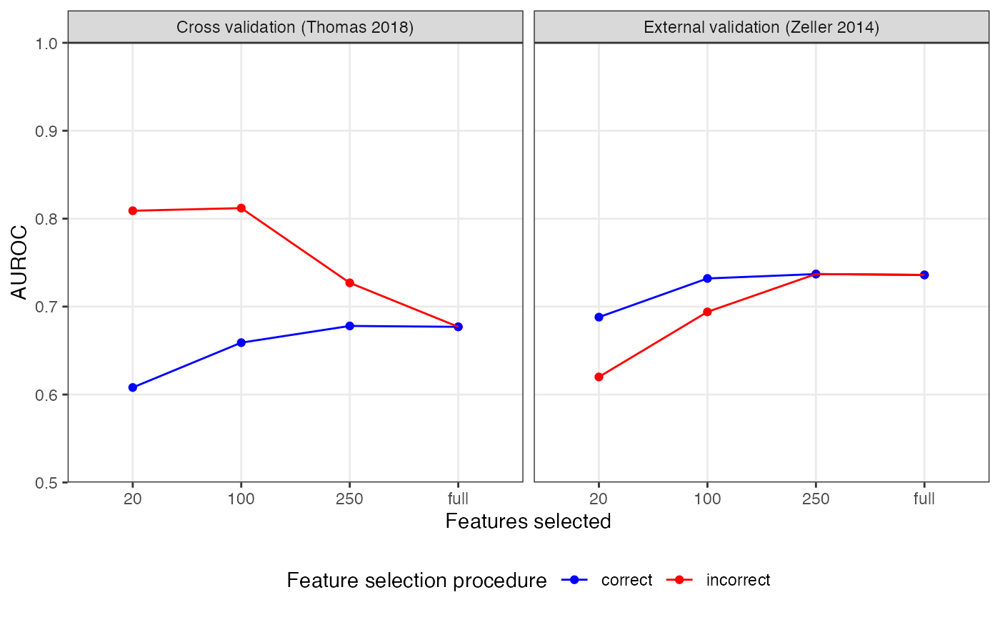
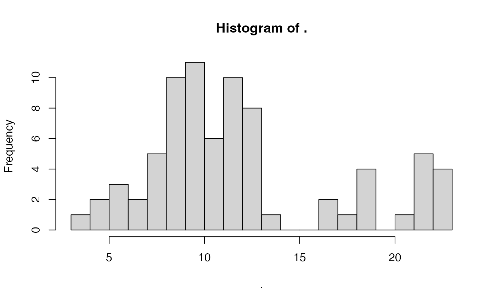
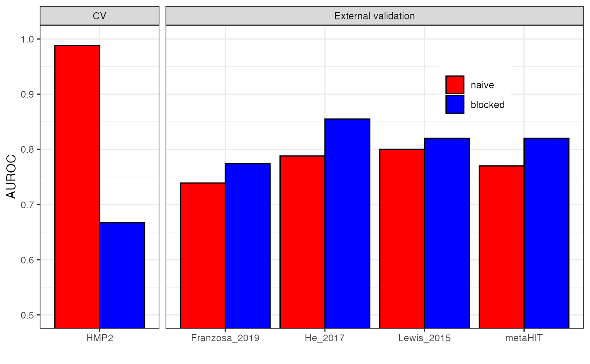

SIAMCAT_ml_pitfalls.RmdIn this vignette, we want to explore two pitfalls for machine
learning analysis that can lead to overly optimistic performance
estimates.
When setting up cross-validation workflows, the main objective is
usually to estimate how well a trained model would perform on external
data, which is specifically important when considering biomarker
discovery. However, more complex workflows involving feature selection
or time-course data can be challenging to setup correctly. Incorrect
workflows in which information leaks from the test to the training data
can lead to overfitting and poor generalization to external
datasets.
Here, we focus on supervised feature selection and the naive splitting
of dependent data.
First, we load the packages needed to perform the analyses.
library("tidyverse")
library("SIAMCAT")Supervised feature selection means that the label information is
taken into account before the cross-validation split. Within this
procedure, the features are selected if they are associated with the
label (for example after differential abundance testing), using the
complete dataset for the calculation of feature association and leaving
no data aside for unbiased model evaluation.
A correct way to perform feature selection would be to nest the
selection step into the cross-validation procedure. That means that the
calculation of feature association is performed for each training fold
separately.
As an example, we are going to use two datasets of colorectal cancer
(CRC) which are available through the
curatedMetagenomicData package.
Since the model trainig procedure takes a long time, this vignette is
not evaluated upon build of the package, but if you execute the code
chunks for yourself, you should get similar results.
First, we are going to load the dataset from Thomas et al as training dataset.
x <- 'ThomasAM_2018a.metaphlan_bugs_list.stool'
feat.t <- curatedMetagenomicData(x=x, dryrun=FALSE)
feat.t <- feat.t[[x]]@assayData$exprs
# clean up metaphlan profiles to contain only species-level abundances
feat.t <- feat.t[grep(x=rownames(feat.t), pattern='s__'),]
feat.t <- feat.t[grep(x=rownames(feat.t),pattern='t__', invert = TRUE),]
stopifnot(all(colSums(feat.t) != 0))
feat.t <- t(t(feat.t)/100)As an external dataset, we are going to use the data from Zeller et al..
x <- 'ZellerG_2014.metaphlan_bugs_list.stool'
feat.z <- curatedMetagenomicData(x=x, dryrun=FALSE)
feat.z <- feat.z[[x]]@assayData$exprs
# clean up metaphlan profiles to contain only species-level abundances
feat.z <- feat.z[grep(x=rownames(feat.z), pattern='s__'),]
feat.z <- feat.z[grep(x=rownames(feat.z),pattern='t__', invert = TRUE),]
stopifnot(all(colSums(feat.z) != 0))
feat.z <- t(t(feat.z)/100)We can also extract the corresponding metadata from the
combined_metadata object which is part of the
curatedMetagenomicData package.
meta.t <- combined_metadata %>%
filter(dataset_name == 'ThomasAM_2018a') %>%
filter(study_condition %in% c('control', 'CRC'))
rownames(meta.t) <- meta.t$sampleID
meta.z <- combined_metadata %>%
filter(dataset_name == 'ZellerG_2014') %>%
filter(study_condition %in% c('control', 'CRC'))
rownames(meta.z) <- meta.z$sampleIDThe MetaPhlAn2 profiler used for the profiles outputs only species
which are present in the dataset. Therefore, we can have the case that
there are species in the matrix for ThomasAM_2018 which are
not present in the matrix for ZellerG_2014 and vice verse.
In order to use them as training and external test set for
SIAMCAT, we have to first make sure that the set of
features for both datasets overlap completely (see also the
Holdout Testing with SIAMCAT vignette).
species.union <- union(rownames(feat.t), rownames(feat.z))
# add Zeller_2014-only species to the Thomas_2018 matrix
add.species <- setdiff(species.union, rownames(feat.t))
feat.t <- rbind(feat.t,
matrix(0, nrow=length(add.species), ncol=ncol(feat.t),
dimnames = list(add.species, colnames(feat.t))))
# add Thomas_2018-only species to the Zeller_2014 matrix
add.species <- setdiff(species.union, rownames(feat.z))
feat.z <- rbind(feat.z,
matrix(0, nrow=length(add.species), ncol=ncol(feat.z),
dimnames = list(add.species, colnames(feat.z))))Now, we are ready to start the model training process. For this, we chose three different feature selection cutoffs and prepare a tibble to hold the results:
First, we will train a model without any feature selection, using all
the available features. We add it to the results matrix twice (both with
correct and incorrect) for easier plotting
later.
sc.obj.t <- siamcat(feat=feat.t, meta=meta.t,
label='study_condition', case='CRC')
sc.obj.t <- filter.features(sc.obj.t, filter.method = 'prevalence',
cutoff = 0.01)
sc.obj.t <- normalize.features(sc.obj.t, norm.method = 'log.std',
norm.param=list(log.n0=1e-05, sd.min.q=0))
sc.obj.t <- create.data.split(sc.obj.t,
num.folds = 10, num.resample = 10)
sc.obj.t <- train.model(sc.obj.t, method='lasso')
sc.obj.t <- make.predictions(sc.obj.t)
sc.obj.t <- evaluate.predictions(sc.obj.t)
auroc.all <- auroc.all %>%
add_row(cutoff='full', type='correct',
study.test='Thomas_2018',
AUC=as.numeric(sc.obj.t@eval_data$auroc)) %>%
add_row(cutoff='full', type='incorrect', study.test='Thomas_2018',
AUC=as.numeric(sc.obj.t@eval_data$auroc)) We then also apply the model to the external dataset and record the generalization to another dataset:
sc.obj.z <- siamcat(feat=feat.z, meta=meta.z,
label='study_condition', case='CRC')
sc.obj.z <- make.predictions(sc.obj.t, sc.obj.z)
sc.obj.z <- evaluate.predictions(sc.obj.z)
auroc.all <- auroc.all %>%
add_row(cutoff='full', type='correct',
study.test='Zeller_2014',
AUC=as.numeric(sc.obj.z@eval_data$auroc)) %>%
add_row(cutoff='full', type='incorrect',
study.test='Zeller_2014',
AUC=as.numeric(sc.obj.z@eval_data$auroc)) For the incorrect feature selection procedure, we can test the features for differential abundance, using the complete dataset, and then chose the top associated features.
sc.obj.t <- check.associations(sc.obj.t, detect.lim = 1e-05,
fn.plot = 'assoc_plot.pdf')
mat.assoc <- associations(sc.obj.t)
mat.assoc$species <- rownames(mat.assoc)
# sort by p-value
mat.assoc <- mat.assoc %>% as_tibble() %>% arrange(p.val)Based on the P values from the check.association
function, we now chose X number of features on which to
train the model.
for (x in fs.cutoff){
# select x number of features based on p-value ranking
feat.train.red <- feat.t[mat.assoc %>%
slice(seq_len(x)) %>%
pull(species),]
sc.obj.t.fs <- siamcat(feat=feat.train.red, meta=meta.t,
label='study_condition', case='CRC')
# normalize the features without filtering
sc.obj.t.fs <- normalize.features(sc.obj.t.fs, norm.method = 'log.std',
norm.param=list(log.n0=1e-05,sd.min.q=0),feature.type = 'original')
# take the same cross validation split as before
data_split(sc.obj.t.fs) <- data_split(sc.obj.t)
# train
sc.obj.t.fs <- train.model(sc.obj.t.fs, method = 'lasso')
# make predictions
sc.obj.t.fs <- make.predictions(sc.obj.t.fs)
# evaluate predictions and record the result
sc.obj.t.fs <- evaluate.predictions(sc.obj.t.fs)
auroc.all <- auroc.all %>%
add_row(cutoff=as.character(x), type='incorrect',
study.test='Thomas_2018',
AUC=as.numeric(sc.obj.t.fs@eval_data$auroc))
# apply to the external dataset and record the result
sc.obj.z <- siamcat(feat=feat.z, meta=meta.z,
label='study_condition', case='CRC')
sc.obj.z <- make.predictions(sc.obj.t.fs, sc.obj.z)
sc.obj.z <- evaluate.predictions(sc.obj.z)
auroc.all <- auroc.all %>%
add_row(cutoff=as.character(x), type='incorrect',
study.test='Zeller_2014',
AUC=as.numeric(sc.obj.z@eval_data$auroc))
}Feature selection can be performed correctly if it is nested within
the cross-validation procedure. We can do it using SIAMCAT
by specifying the perform.fs parameter in the
train.model function.
for (x in fs.cutoff){
# train using the original SIAMCAT object
# with correct version of feature selection
sc.obj.t.fs <- train.model(sc.obj.t, method = 'lasso', perform.fs = TRUE,
param.fs = list(thres.fs = x,method.fs = "AUC",direction='absolute'))
# make predictions
sc.obj.t.fs <- make.predictions(sc.obj.t.fs)
# evaluate predictions and record the result
sc.obj.t.fs <- evaluate.predictions(sc.obj.t.fs)
auroc.all <- auroc.all %>%
add_row(cutoff=as.character(x), type='correct',
study.test='Thomas_2018',
AUC=as.numeric(sc.obj.t.fs@eval_data$auroc))
# apply to the external dataset and record the result
sc.obj.z <- siamcat(feat=feat.z, meta=meta.z,
label='study_condition', case='CRC')
sc.obj.z <- make.predictions(sc.obj.t.fs, sc.obj.z)
sc.obj.z <- evaluate.predictions(sc.obj.z)
auroc.all <- auroc.all %>%
add_row(cutoff=as.character(x), type='correct',
study.test='Zeller_2014',
AUC=as.numeric(sc.obj.z@eval_data$auroc))
}Now, we can plot the resulting performance estimates for the cross-validation and the external validation as well:
auroc.all %>%
# facetting for plotting
mutate(split=case_when(study.test=="Thomas_2018"~
'Cross validation (Thomas 2018)',
TRUE~"External validation (Zeller 2014)")) %>%
# convert to factor to enforce ordering
mutate(cutoff=factor(cutoff, levels = c(fs.cutoff, 'full'))) %>%
ggplot(aes(x=cutoff, y=AUC, col=type)) +
geom_point() + geom_line(aes(group=type)) +
facet_grid(~split) +
scale_y_continuous(limits = c(0.5, 1), expand = c(0,0)) +
xlab('Features selected') +
ylab('AUROC') +
theme_bw() +
scale_colour_manual(values = c('correct'='blue', 'incorrect'='red'),
name='Feature selection procedure') +
theme(panel.grid.minor = element_blank(), legend.position = 'bottom')
As you can see, the incorrect feature selection procedure leads to inflated AUROC values but lower generalization to a truly external dataset, especially when very few features were selected. In contrast, the correct procedure gives a lower cross-validation results but a better estimation for how the model would perform on external data.
Another issue in machine learning workflows can occur when samples
are not independent. For example, microbiome samples taken from the same
individual at different time points are usually more similar to each
other than to samples from other individuals. If these samples are split
randomly in a naive cross-validation procedure, the case could arise
that samples from the same individual will end up in the training and
the test fold. In this case, the model would learn to generalize across
time-points for the same individual compared to the desired model that
should learn to distinguish the label across individuals.
To avoid this issue, dependent measurements need to be blocked during
cross-validation, to ensure that samples within the same block will stay
in the same fold (for training and testing).
As an example, we are going to use several datasets of Crohn’s
disease (CD) which are available through the EMBL cluster. The data have
already been filtered and cleaned.
Since the model training would take again quite a long time, this part
of the vignette is not evaluated upon building of the package, but you
should be able to execute it yourself.
data.loc <- 'https://zenodo.org/api/files/d81e429c-870f-44e0-a44a-2a4aa541b6c1/'
# metadata
meta.all <- read_tsv(paste0(data.loc, 'meta_all_cd.tsv'))
## Rows: 1597 Columns: 6
## ── Column specification ────────────────────────────────────────────────────────
## Delimiter: "\t"
## chr (4): Sample_ID, Group, Individual_ID, Study
## dbl (2): Library_Size, Timepoint
##
## ℹ Use `spec()` to retrieve the full column specification for this data.
## ℹ Specify the column types or set `show_col_types = FALSE` to quiet this message.
# features
feat.motus <- read.table(paste0(data.loc, 'feat_rel_filt_cd.tsv'),
sep='\t', stringsAsFactors = FALSE,
check.names = FALSE)When we look at the number of samples and number of individuals, we
see that that there are several samples per individual for example in
the HMP2 study.
x <- meta.all %>%
group_by(Study, Group) %>%
summarise(n.all=n(), .groups='drop')
y <- meta.all %>%
select(Study, Group, Individual_ID) %>%
distinct() %>%
group_by(Study, Group) %>%
summarize(n.indi=n(), .groups='drop')
full_join(x,y)
## Joining with `by = join_by(Study, Group)`
## # A tibble: 10 × 4
## Study Group n.all n.indi
## <chr> <chr> <int> <int>
## 1 Franzosa_2019 CD 88 88
## 2 Franzosa_2019 CTR 56 56
## 3 HMP2 CD 583 50
## 4 HMP2 CTR 357 26
## 5 He_2017 CD 49 49
## 6 He_2017 CTR 53 53
## 7 Lewis_2015 CD 294 85
## 8 Lewis_2015 CTR 25 25
## 9 metaHIT CD 21 13
## 10 metaHIT CTR 71 59Therefore, we are going to train a model on the HMP2
study. However, the number of samples per individual varies quite a lot
across samples, therefore we want to randomly select a set of 5 samples
per individual:
meta.all %>%
filter(Study=='HMP2') %>%
group_by(Individual_ID) %>%
summarise(n=n(), .groups='drop') %>%
pull(n) %>% hist(20)
# sample 5 samples per individual
meta.train <- meta.all %>%
filter(Study=='HMP2') %>%
group_by(Individual_ID) %>%
sample_n(5, replace = TRUE) %>%
distinct() %>%
as.data.frame()
rownames(meta.train) <- meta.train$Sample_IDFor evaluation, we only want a single sample per individual, therefore we can create a new matrix removing repeated samples for the other studies:
meta.ind <- meta.all %>%
group_by(Individual_ID) %>%
filter(Timepoint==min(Timepoint)) %>%
ungroup()Lastly, we can already create a tibble to hold the resulting AUROC values:
The naive way to split samples for cross-validation does not take into account the dependency between samples. Therefore, the pipeline would look basically like this:
sc.obj <- siamcat(feat=feat.motus, meta=meta.train,
label='Group', case='CD')
sc.obj <- normalize.features(sc.obj, norm.method = 'log.std',
norm.param=list(log.n0=1e-05,sd.min.q=1),feature.type = 'original')
sc.obj.naive <- create.data.split(sc.obj, num.folds = 10, num.resample = 10)
sc.obj.naive <- train.model(sc.obj.naive, method='lasso')
sc.obj.naive <- make.predictions(sc.obj.naive)
sc.obj.naive <- evaluate.predictions(sc.obj.naive)
auroc.all <- auroc.all %>%
add_row(type='naive', study.test='HMP2',
AUC=as.numeric(eval_data(sc.obj.naive)$auroc))The correct way to to take into account repeated samples would be to
block the cross-validation procedure by individuals. This way, samples
from the same individual will always end up in the same fold. This can
be performed in SIAMCAT by specifying the
inseparable parameter in the create.data.split
function:
sc.obj.block <- create.data.split(sc.obj, num.folds = 10, num.resample = 10,
inseparable = 'Individual_ID')
sc.obj.block <- train.model(sc.obj.block, method='lasso')
sc.obj.block <- make.predictions(sc.obj.block)
sc.obj.block <- evaluate.predictions(sc.obj.block)
auroc.all <- auroc.all %>%
add_row(type='blocked', study.test='HMP2',
AUC=as.numeric(eval_data(sc.obj.block)$auroc))Now, we can apply both models to external datasets and record the resulting accuracy:
for (i in setdiff(unique(meta.all$Study), 'HMP2')){
meta.test <- meta.ind %>%
filter(Study==i) %>%
as.data.frame()
rownames(meta.test) <- meta.test$Sample_ID
# apply naive model
sc.obj.test <- siamcat(feat=feat.motus, meta=meta.test,
label='Group', case='CD')
sc.obj.test <- make.predictions(sc.obj.naive, sc.obj.test)
sc.obj.test <- evaluate.predictions(sc.obj.test)
auroc.all <- auroc.all %>%
add_row(type='naive', study.test=i,
AUC=as.numeric(eval_data(sc.obj.test)$auroc))
# apply blocked model
sc.obj.test <- siamcat(feat=feat.motus, meta=meta.test,
label='Group', case='CD')
sc.obj.test <- make.predictions(sc.obj.block, sc.obj.test)
sc.obj.test <- evaluate.predictions(sc.obj.test)
auroc.all <- auroc.all %>%
add_row(type='blocked', study.test=i,
AUC=as.numeric(eval_data(sc.obj.test)$auroc))
}Now, we can compare the resulting AUROC values between the two different approaches:
auroc.all %>%
# convert to factor to enforce ordering
mutate(type=factor(type, levels = c('naive', 'blocked'))) %>%
# facetting for plotting
mutate(CV=case_when(study.test=='HMP2'~'CV',
TRUE~'External validation')) %>%
ggplot(aes(x=study.test, y=AUC, fill=type)) +
geom_bar(stat='identity', position = position_dodge(), col='black') +
theme_bw() +
coord_cartesian(ylim=c(0.5, 1)) +
scale_fill_manual(values=c('red', 'blue'), name='') +
facet_grid(~CV, space = 'free', scales = 'free') +
xlab('') + ylab('AUROC') +
theme(legend.position = c(0.8, 0.8))
As you can see, the naive cross-validation procedure leads to a inflated performance estimation compared to the blocked cross-validation. However, when assessing generalization to truly external datasets, the blocked procedure results in better performance.
sessionInfo()
## R version 4.2.2 (2022-10-31)
## Platform: x86_64-apple-darwin17.0 (64-bit)
## Running under: macOS Big Sur ... 10.16
##
## Matrix products: default
## BLAS: /Library/Frameworks/R.framework/Versions/4.2/Resources/lib/libRblas.0.dylib
## LAPACK: /Library/Frameworks/R.framework/Versions/4.2/Resources/lib/libRlapack.dylib
##
## locale:
## [1] en_US.UTF-8/en_US.UTF-8/en_US.UTF-8/C/en_US.UTF-8/en_US.UTF-8
##
## attached base packages:
## [1] stats graphics grDevices utils datasets methods base
##
## other attached packages:
## [1] SIAMCAT_2.3.3 phyloseq_1.42.0 mlr3_0.14.1 lubridate_1.9.2
## [5] forcats_1.0.0 stringr_1.5.0 dplyr_1.1.0 purrr_1.0.1
## [9] readr_2.1.4 tidyr_1.3.0 tibble_3.2.0 ggplot2_3.4.1
## [13] tidyverse_2.0.0 BiocStyle_2.26.0
##
## loaded via a namespace (and not attached):
## [1] uuid_1.1-0 backports_1.4.1 corrplot_0.92
## [4] systemfonts_1.0.4 plyr_1.8.8 igraph_1.4.1
## [7] splines_4.2.2 listenv_0.9.0 GenomeInfoDb_1.34.9
## [10] gridBase_0.4-7 digest_0.6.31 foreach_1.5.2
## [13] htmltools_0.5.4 lmerTest_3.1-3 fansi_1.0.4
## [16] magrittr_2.0.3 checkmate_2.1.0 memoise_2.0.1
## [19] cluster_2.1.4 tzdb_0.3.0 globals_0.16.2
## [22] Biostrings_2.66.0 mlr3tuning_0.18.0 matrixStats_0.63.0
## [25] vroom_1.6.1 timechange_0.2.0 pkgdown_2.0.7
## [28] prettyunits_1.1.1 colorspace_2.1-0 textshaping_0.3.6
## [31] xfun_0.37 crayon_1.5.2 RCurl_1.98-1.10
## [34] jsonlite_1.8.4 lme4_1.1-32 survival_3.5-5
## [37] iterators_1.0.14 ape_5.7-1 glue_1.6.2
## [40] gtable_0.3.1 zlibbioc_1.44.0 XVector_0.38.0
## [43] Rhdf5lib_1.20.0 shape_1.4.6 BiocGenerics_0.44.0
## [46] scales_1.2.1 infotheo_1.2.0.1 DBI_1.1.3
## [49] Rcpp_1.0.10 progress_1.2.2 palmerpenguins_0.1.1
## [52] bit_4.0.5 stats4_4.2.2 glmnet_4.1-6
## [55] RColorBrewer_1.1-3 ellipsis_0.3.2 farver_2.1.1
## [58] pkgconfig_2.0.3 sass_0.4.5 utf8_1.2.3
## [61] labeling_0.4.2 tidyselect_1.2.0 rlang_1.1.0
## [64] reshape2_1.4.4 PRROC_1.3.1 munsell_0.5.0
## [67] tools_4.2.2 cachem_1.0.7 cli_3.6.0
## [70] generics_0.1.3 ade4_1.7-22 evaluate_0.20
## [73] biomformat_1.26.0 fastmap_1.1.1 yaml_2.3.7
## [76] ragg_1.2.5 bit64_4.0.5 knitr_1.42
## [79] fs_1.6.1 lgr_0.4.4 beanplot_1.3.1
## [82] bbotk_0.7.2 future_1.32.0 nlme_3.1-162
## [85] paradox_0.11.0 compiler_4.2.2 rstudioapi_0.14
## [88] curl_5.0.0 bslib_0.4.2 stringi_1.7.12
## [91] highr_0.10 desc_1.4.2 lattice_0.20-45
## [94] Matrix_1.5-3 nloptr_2.0.3 vegan_2.6-4
## [97] permute_0.9-7 multtest_2.54.0 vctrs_0.5.2
## [100] pillar_1.8.1 lifecycle_1.0.3 rhdf5filters_1.10.0
## [103] BiocManager_1.30.20 jquerylib_0.1.4 LiblineaR_2.10-22
## [106] data.table_1.14.8 bitops_1.0-7 R6_2.5.1
## [109] bookdown_0.33 gridExtra_2.3 mlr3misc_0.11.0
## [112] IRanges_2.32.0 parallelly_1.34.0 codetools_0.2-19
## [115] boot_1.3-28.1 MASS_7.3-58.3 rhdf5_2.42.0
## [118] mlr3learners_0.5.6 rprojroot_2.0.3 withr_2.5.0
## [121] S4Vectors_0.36.2 GenomeInfoDbData_1.2.9 mgcv_1.8-42
## [124] parallel_4.2.2 hms_1.1.2 grid_4.2.2
## [127] minqa_1.2.5 rmarkdown_2.20 pROC_1.18.0
## [130] numDeriv_2016.8-1.1 Biobase_2.58.0